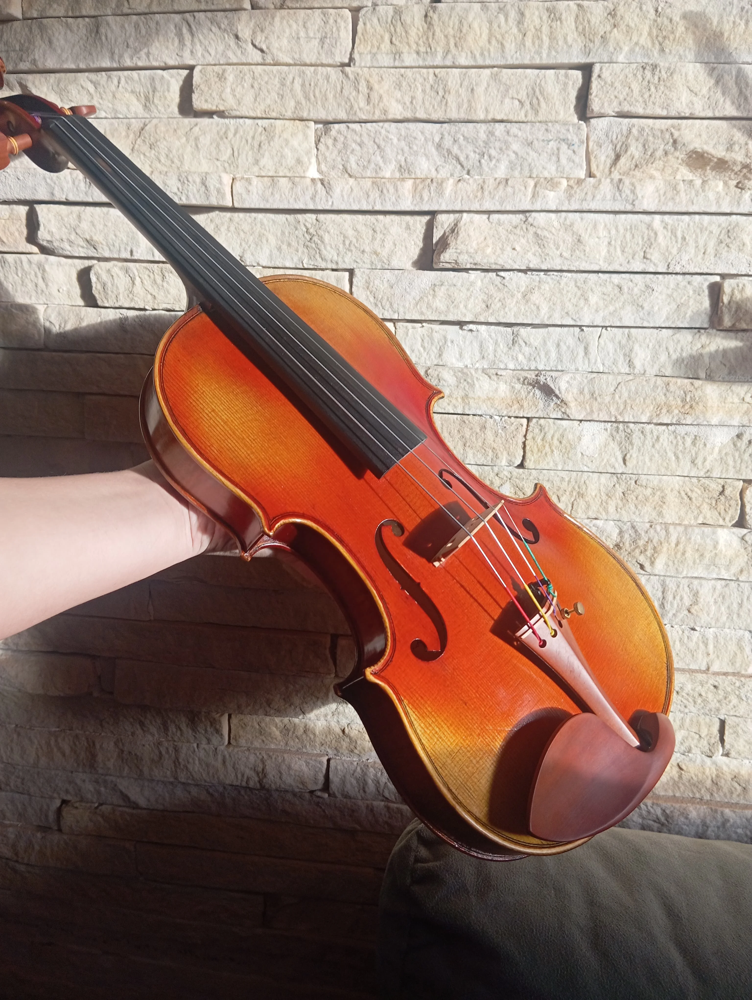
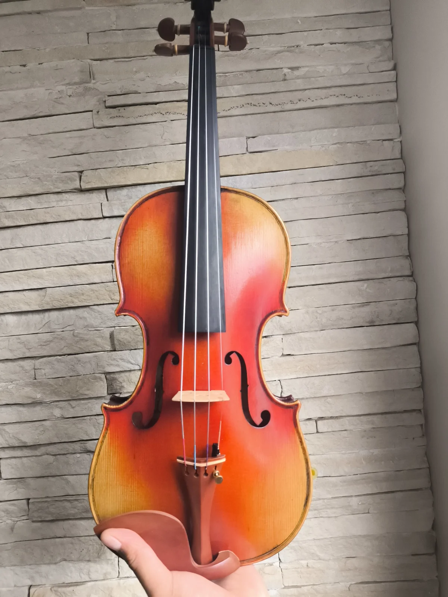
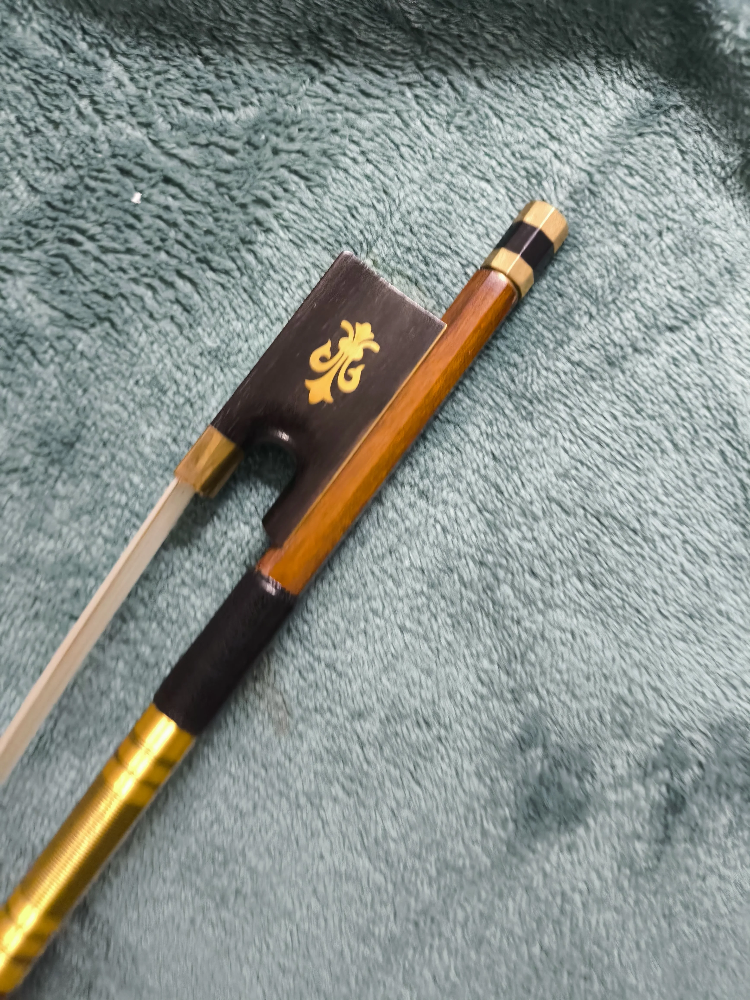

Equipamento Premium, Preço de Fábrica
Descubra como adquirir violinos, arcos e acessórios de alta performance cortando intermediários e economizando até 40%.
O Segredo do Mercado Musical
Você já se perguntou por que um instrumento custa tão caro nas lojas brasileiras? A resposta está na cadeia de atravessadores. Como músico e pesquisador, eu desenvolvi um caminho para que você tenha acesso direto às fontes.
- Instrumentos Completos: A lei permite a importação de violinos, violas e violoncelos (caixas de até 30kg). Você pode adquirir instrumentos de oficina com madeiras tradicionais europeias por uma fração do preço nacional.
- Acessórios Direto da Fonte: Arcos de pau-brasil, estojos de fibra de carbono, cordas profissionais e breus premium importados com segurança.
- Oportunidade de Negócio: Muitos alunos utilizam este método para iniciar sua própria loja ou oficina, revendendo acessórios com alta margem de lucro.
Minhas Importações: Violino Liu Xi M20+
(Stradivarius The Cremonese)
Investimento: Paguei R$ 1.300 | Preço no Brasil: R$ 3.500
Um exemplo clássico de como a importação reduz custos drasticamente. Este Stradivarius reprodução de oficina chinesa é construído com técnicas tradicionais e oferece uma qualidade de som muito boa para iniciantes e intermediários. Ao importar diretamente, economizei mais de 60%!


Minhas Importações: Arco Ipê D. Peccatte
Investimento: Paguei R$ 279 | Preço no Brasil: R$ 550
O arco Ipê é uma escolha excelente de custo-benefício para violinistas em desenvolvimento. A madeira Ipê oferece estabilidade em ambientes úmidos, sendo perfeita para o clima tropical. Este modelo replica o design de arcos profissionais europeus, mas com o preço de mercado asiático.


O Método NKL
O conhecimento tem valor. Se você tem condições financeiras de investir neste treinamento, saiba que o valor cobrado é irrisório perto dos milhares de reais que você vai economizar ao longo da sua vida musical.
Mas nós conhecemos a realidade do músico no Brasil. Se a grana está realmente curta e você precisa desse acesso para evoluir nos seus estudos, use o cupom de apoio abaixo.
Acessar o Método NKL Agora